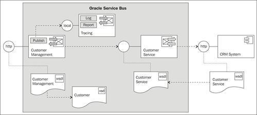
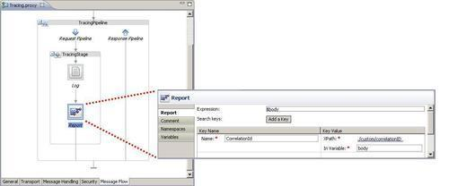
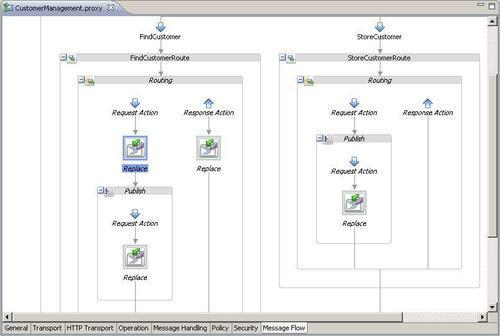
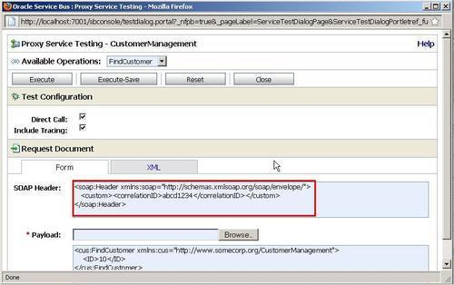

In this recipe, we will create a proxy service which can be reused and which is only available for other proxy services within the same OSB configuration, therefore we call it private proxy service in this recipe. The setup of the recipe is shown in the following screenshot:

Make sure to have the latest state of the basic-osb-service project from the first chapter available in Eclipse OEPE. We will use it for this recipe. If necessary, it can be imported from here: \chapter-1\solution\with-transformation-proxy-service-created.
First, we will create a new proxy service which will provide the internal functionality that can be reused by other proxy services. In Eclipse OEPE, perform the following steps:
proxy folder and name it Tracing. TracingPipeline. TracingStage. $body/custom/correlationID/text() into the Expression field. Message received with ID into the Annotation field. $body into the Expression field and click OK. CorrelationId into the Name field../custom/correlationID into the Expression field and click OK. body into the In Variable field.
Our reusable tracing functionality is now available. Let's use it from the CustomerManagement proxy service.
body into the In Variable field $header/custom into the Expression field and click OK.
Now, let's test the added functionality through the Test console. In the Service Bus console, perform the following steps:
<custom><correlationID>abcd1234</correlationID></custom> in between the soap:Header element and click Execute.
The CustomerManagement proxy service calls the Tracing proxy for all incoming messages. Because we have used a Publish action instead of a Service Callout action, the Tracing proxy gets invoked by the CustomerManagement proxy service without waiting for any response. The information written by the Reporting action can be viewed through the Oracle Service Bus console by clicking on Message Reports in the Reporting section.
When using the Local transport for a proxy service, as shown in this recipe for the Tracing proxy service, no Endpoint URI has to be configured. The reason for that is that a local proxy service can never be called from outside the OSB; it's only available for other proxy services within the same OSB.
We used a simple example to centrally use the Log and Report action of the OSB. However, private proxy services can be used for multiple tasks which have a high repetitive nature. Think of error handling or similar transformation of XML messages in